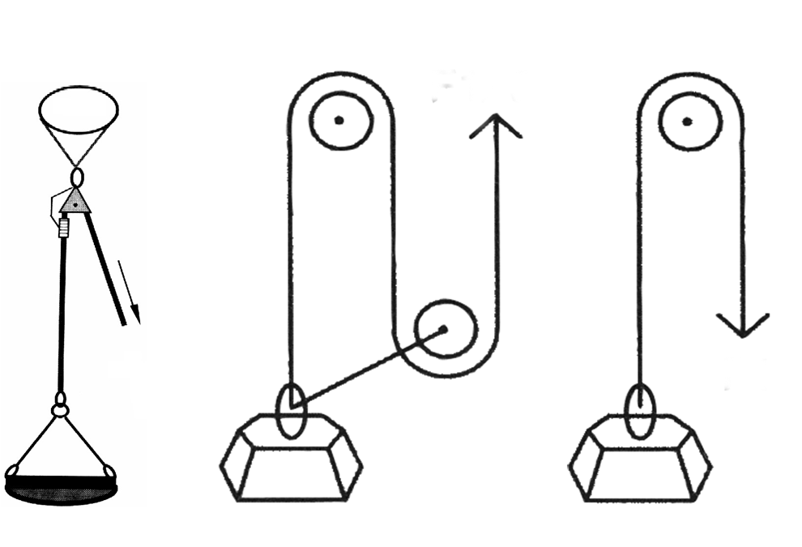
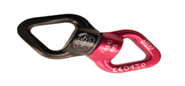

ASOCIATIA NATIONALA A SALVATORILOR MONTANI DIN ROMANIA
PROCEDURI ȘI TEHNICI DE BAZĂ ÎN SALVAREA MONTANĂ
Dispozitive de tracţiune
Dispozitivele de tracţiune sunt folosite în operaţiunile de salvare pentru uşurarea efortului fizic, la tracţionarea diferitelor sarcini (accidentat, dispozitiv de transport, etc.).
. Scripeţi
Scripeţii sunt dispozitivele cele mai simple şi uşor de manevrat la tracţionarea sarcinilor.
Cu ajutorul mai multor role (vezi fig. 42, 43 – cap. 3) şi blocatoare (vezi fig. 44, 45 – cap. 3), se pot realiza sisteme de scripeţi. La realizarea scripeţilor se pot folosi corzi statice (de preferat) sau dinamice cu diametrul de 10,5 mm. şi cu o rezistenţă cuprinsă între 23 şi 29 KN. De asemenea este recomandat să se folosească carabiniere cu siguranţă, cu o rezistenţă minimă de 30 KN.
Vom enumera trei dintre aceste sisteme, considerate uzuale:
1.Scripeţi simpli (fig. 98, )
În acest caz, forţa de tracţiune „F” este egală cu greutatea „G”, (F = G)
La acest sistem sunt necesare următoarele materiale:
•Coardă
•Blocator
Rolă simplă – 1 buc

Fig. 98
•Scripeţi de gradul II
În acest caz, F = G/2
La acest sistem sunt necesare următoarele materiale:
•Coardă
•2 Blocator
Role simple – 3 buc
Acest sistem este aplicat de catre majoritatea centrelor europene de salvare dar in sistem de oglinda Fig 1


Fig. 1
•Scripeţi de gradul III, cu tracţiune opusa sarcini
În acest caz, F = G/3
La acest sistem sunt necesare următoarele materiale:
•Coardă
•Blocatoare – 2 buc.
•Role simple – 3 buc.


•Fig 1-2 si 3 Sisteme de elevare uzuale in sistemul de salvare montana folosite in teren variat
Fig.1
Fig. 2
Fig. 3
Sistemele de elevare
Sistemele de elevare folosite in activitatea de salvare montana ocupa unul din tehnicile principale in vederea transportari accidentatilor in teren variat.
In sistemul salvari montane se aplica procedee simple si eficiente in vederea tractionari eficiente a persoanelor transportate .
Cele mai uzuale sisteme de elevare fiind .
scripete de gradu 1 (1 rola un blocator) Fig 1
Scripete de gradu 2 (2 role 2 blocatoare) Fig 2
Scripete de gradu 3 (2 blocatoare 3 role) fig 3
Scripete de gradu 3x3 (5 role 3 blocatoare) Fig 4
Sistem de elevare liniara efectuata pe scripeti Twin Fig 5
Sisteme de elevare pe tandemFig 6


Fig. 1
Fig. 2
Fig. 3
Fig. 4
Fig. 5
Fig. 6
Troliu
În prezent, firmele producătoare de astfel de dispozitive au diversificat gama acestora, principala diferenţă fiind modul în care se face recuperarea cablului sau a corzii statice:
•Prin rotire, cu ajutorul manivelelor
•Prin mişcare de „du-te – vino”, cu ajutorul unui singur braţ
•Prin rotire, cu ajutorul unor motoare cu combustie.
Troliile cu cablu folosesc role cu 100 de metri de cablu, cu diametrul cuprins între 5 şi 6 mm, cu o rezistenţă de 18 KN.
Foarte importante la folosirea troliilor sunt următoarele:
•verificarea cablului, pentru a nu avea toroane rupte,
•ancorarea trebuie făcută în aşa fel încât în timpul manevrelor troliul să rămână fix. Punctele de ancorare trebuiesc bine alese. Se recomandă folosirea pitoanelor de expansiune şi a prizelor naturale.
•direcţia de tracţiune trebuie să fie pe axa longitudinală a troliului.
•cablul nu are voie să se sprijine direct pe margini stâncoase. Pentru evitarea acestora se montează role de protecţie.
.În cadrul operaţiunilor de tractionare sau lansare cu ajutorul troliului, sunt folosite mai multe accesorii :
1. Carabinieră de forţă (metalică), cu siguranţă, cu rezistenţa de 3500 kgF
2. Rolă pentru dirijarea cablului
3. Vârtej pentru detensionarea cablului sau al corzi
4..Protectie de cablu
5.Tripoda de extractie cu 2 sisteme de elevare (trolii)
6.Baston Ancora de verticala cu troliu


